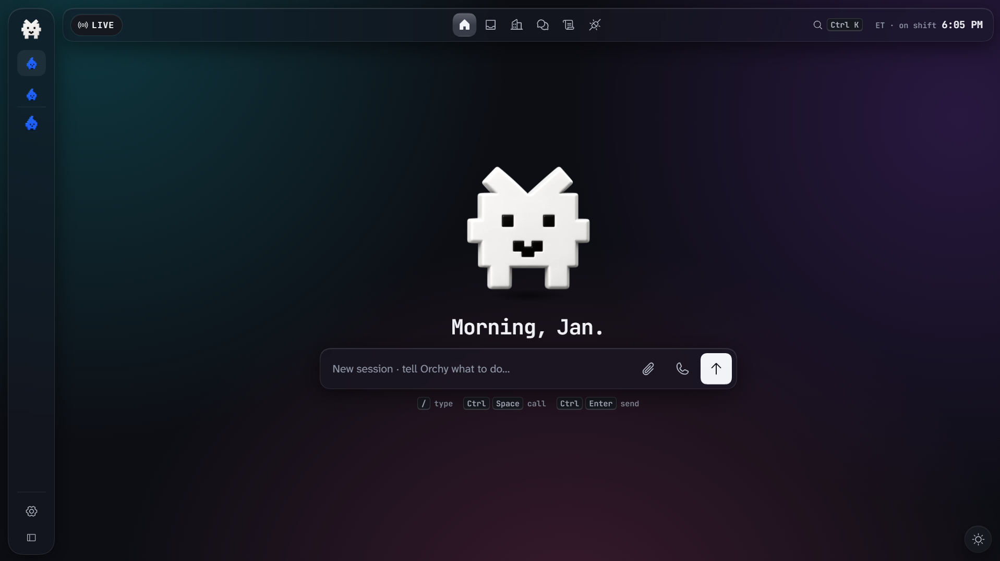
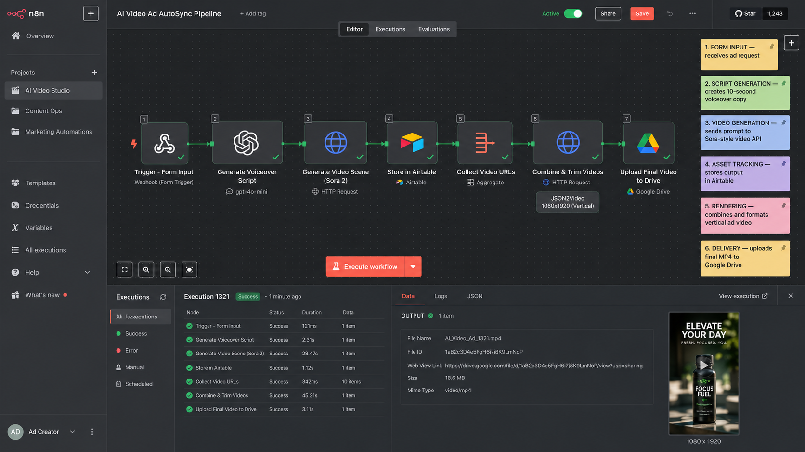
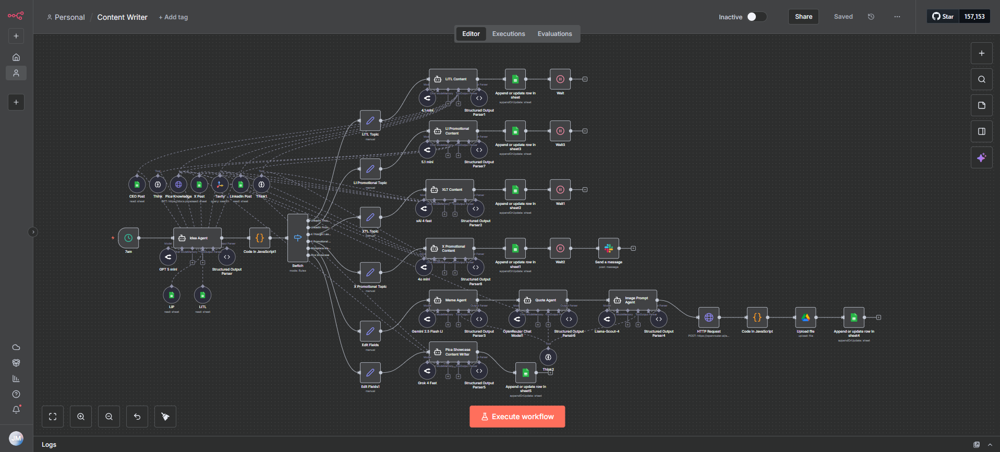

Orchy
AI orchestrator · multi-business · approval-first
Orchy is one place to run several businesses with AI agents. I give it an instruction in plain language and it uses Jev, a TypeSafe model, to work out which business, agent and model fits, then runs it on Claude Code or Codex under that business's own account. Each business keeps its own folder, connections and agents, so nothing crosses between them, however many I add. Anything that sends, spends, shares or deletes pauses for my approval, and when an instruction is unclear Orchy asks instead of guessing. Every run is logged, and each task keeps its own folder with a record of what was asked and what was done.

J/OS HQ
One CLI · multi-agent orchestration · approval-gated
J/OS HQ is a local command center that runs AI agents for two businesses behind a single approval gate. Built on the One CLI, Claude Code, and the Codex CLI, it routes each request to the right workspace, plans it against live connections, dry-runs every external write, and requires explicit approval before anything leaves the machine. The Next.js dashboard queues and logs every task, pins each workspace's runtime, and scopes sub-agents to only their own connections.
View on GitHub
J/OS Agents
One CLI · isolated multi-agent hub · approval-first
J/OS Agents is a private command center that runs AI agents for two separate businesses from one place while keeping the two strictly apart. Each request is routed to the right business based on the people, projects, and connected apps it mentions — when it can't tell, it asks instead of guessing. A read-only planning pass checks the real live connections before acting, work runs under each business's own account and pinned AI model, and every side effect is drafted and approved before it runs once. Every task is logged on arrival and on completion, and each agent's access is enforced in code, not just written down.
View on GitHub

AI Video Ad AutoSync Pipeline
n8n · AI video automation · end-to-end
Built an end-to-end AI video ad automation in n8n that turns a simple form submission into a finished vertical video asset. The workflow uses AI to generate a short advertising script, creates video content through an image-to-video API, tracks production data in Airtable, automatically renders and formats the video for social platforms, and uploads the final MP4 to Google Drive. The system reduces repetitive production work and makes it faster to create and test multiple ad variations.
View on GitHub

Multi-Agent Content Automation
n8n · multi-agent AI · content ops
A multi-agent AI content automation system that generates, organizes, and prepares social media content across multiple channels. The workflow reviews previous content to avoid repetition, develops new ideas, routes them to specialized AI agents for platform-specific writing, creates supporting visual assets, and stores everything in a centralized review system. It also automatically notifies the team when new content is ready for approval, helping make content production more consistent, scalable, and less dependent on manual work.
View on GitHub
Deal Flow Checker
n8n · AI deal screening · Gmail → Slack
Deal Flow Checker is an n8n automation that monitors incoming deal-flow emails in Gmail and screens every business opportunity against a defined set of acquisition criteria. An AI agent counts how many businesses each email mentions and routes it to single- or multi-business analyst agents, which evaluate industry, revenue, EBITDA, location, and years active. Qualified opportunities are posted to Slack for team review, while everything else is filtered out automatically — turning a crowded inbox into a short list of deals worth pursuing.
View on GitHub
Automation Idea Summary and Prompt Writer
n8n · AI intake pipeline · Google Sheets
Automation Idea Summary and Prompt Writer is an n8n intake workflow that turns messy automation requests into structured, actionable data. New submissions from a Google Sheet flow through a series of AI agents: one isolates the actual automation idea, another rewrites it into an execution-ready prompt, and a third identifies the tools needed to build it. The cleaned output is written back to a Google Sheet, making every submission faster to review, qualify, and act on.
View on GitHubGood systems start with a conversation.
Tell me what’s slowing you down. Let’s find a better way to work.